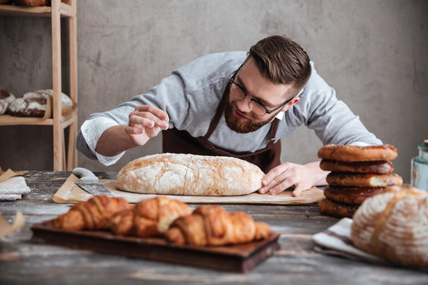

Our Story
FreshBakes™ began as a humble dream in the heart of Catonsville, where Elliott Stern, a former food scientist turned passionate baker wanted to create more than just a bakery. After years of watching loved ones struggle to find delicious baked goods that met their dietary needs, Elliott envisioned a place where everyone could enjoy the simple joy of fresh bread, pastries, and desserts without compromise.
In 2009, Elliott Stern opened the doors to FreshBakes™ with a mission that was as heartfelt as it was ambitious: to bake inclusively. For Elliott, inclusivity wasn’t just about offering gluten-free bread or dairy-free lattes, it was about creating a bakery where no one felt left out of the joy of sharing food.
But FreshBakes™ was never meant to be just a bakery. Elliott envisioned it as a community hub, a place where families could gather on Saturday mornings, where professionals could stop in for a quick coffee before work, and where neighbors could connect over shared tables and warm bread. The bakery’s atmosphere was intentionally welcoming: rustic wooden counters, handwritten chalkboard menus, and the comforting aroma of fresh loaves rising in the oven.
Elliott held fast to the belief that food should be an open invitation, never a barrier. From its earliest days, FreshBakes blossomed into a beloved Catonsville staple; celebrated not only for its flaky croissants and hand‑crafted sourdough, but also for the inviting space it created and its dedication to serving every guest, regardless of dietary needs.
Our Values
- Quality: We use only the finest ingredients to ensure every bite is a delight.
- Freshness: Our products are baked daily to guarantee freshness and flavor.
- Community: We believe in supporting local farmers and businesses to strengthen our community.
- Customer Satisfaction: Your happiness is our top priority. We strive to exceed your expectations with every order.
| Name | Role | What They Bring to FreshBakes™ |
|---|---|---|
| Elliott Stern | Founder & Head Baker | Visionary leader, master of inclusive recipes, and sourdough whisperer |
| Maribel Chen | Pastry Chef | Expert in vegan and gluten-free pastries with a flair for seasonal fruit tarts |
| Jasper Quinn | Operations Manager | Keeps the bakery running smoothly, coordinates catering orders and community events |
| Talia Brooks | Customer Experience Lead | Creates a warm, welcoming vibe; manages loyalty programs and feedback loops |
| Ravi Desai | Ingredient Sourcing Specialist | Builds relationships with local farms and ensures all ingredients meet dietary standards |
| Lena Moretti | Decorator & Cake Artist | Designs stunning custom cakes for birthdays, weddings, and office celebrations |
| Theo Martinez | Barista & Beverage Curator | Crafts coffee and tea pairings that complement every baked good, including dairy-free options |
At the heart of FreshBakes™ is a dedicated team of bakers, baristas, and customer service professionals who share Elliott's passion for inclusive baking. Each member brings their unique skills and creativity to the table, contributing to the vibrant atmosphere that defines our bakery.